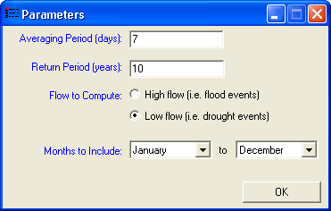

Setting Parameter Options for Low Flow Calculator™
To display the parameter page for Low Flow Calculator™, select "Change Parameters" from the "Options" menu on the main form. This will display the parameter page as shown below:

Parameters that can be adjusted using this form include:
| Averaging Period (days) | Streamflow averaging period in days. For a 7Q10 low flow calculation this value is 7. |
| Return Period (years) | Required return period in years. For a 7Q10 low flow calculation this value is 10. For a 100-year flood it would be 100. |
| Flow to Compute | Choose 'Low' to compute the drought with the specified averaging and return periods, choose 'High' to compute the flood with the specified averaging and return periods. |
| Months to Include | Only data falling within the selected months will be used in the analysis. |